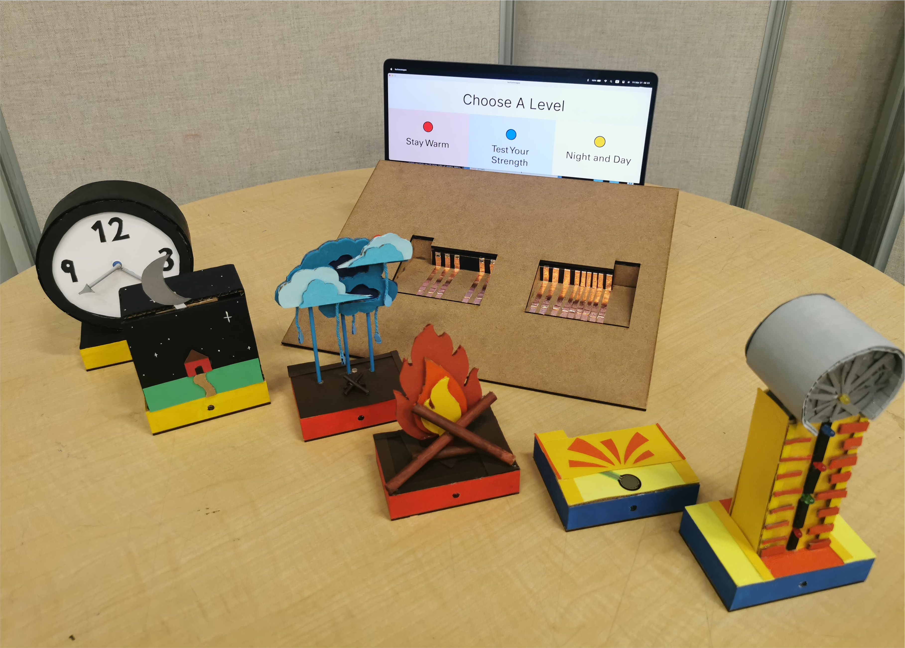
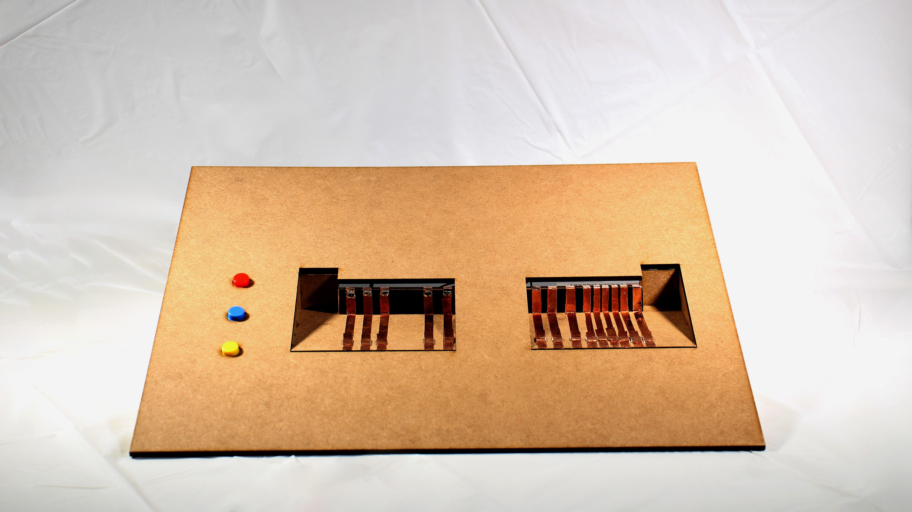
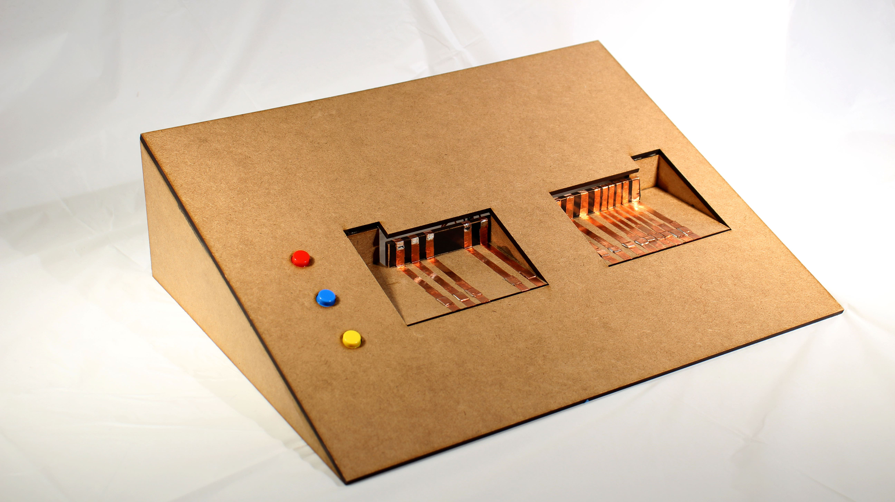
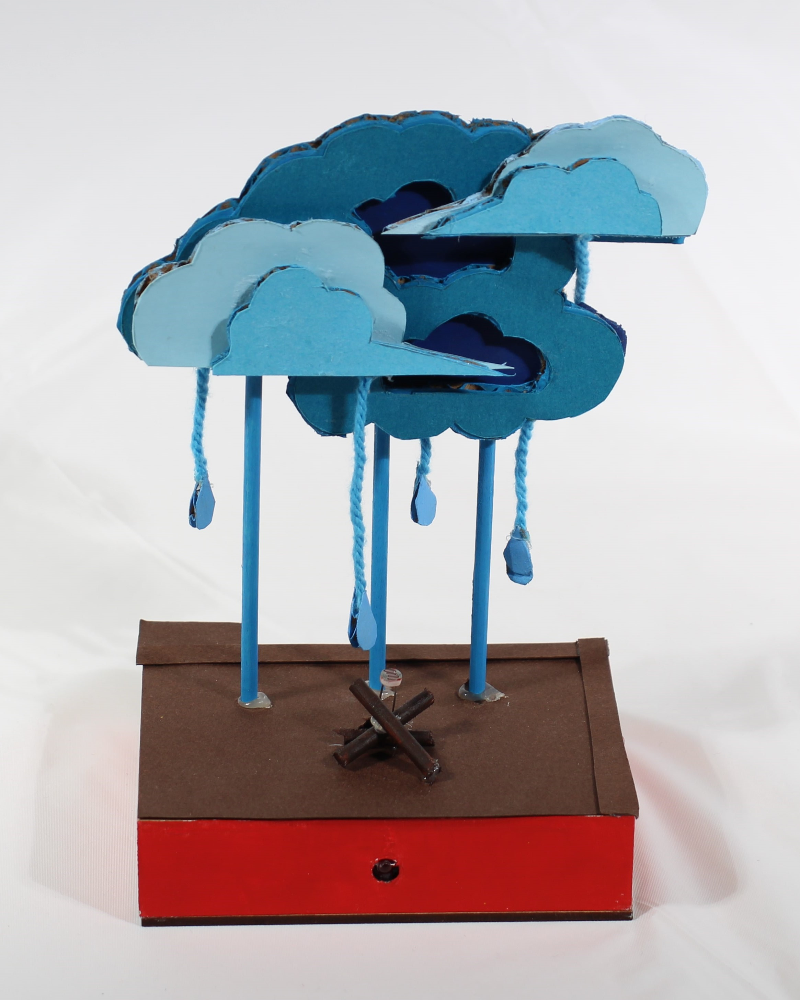

An modular educational toy

Spring 2023
SFU Surrey Campus
Circuit Cubed is an interactive learning aid for children that teaches them about both analogue and digital input and output. Children can utilize their kinesthetics skills by placing and removing block-based modules into the circuit to complete the interaction; they will also learn important information about the inputs and outputs they've used by way of a GUI displayed on the screen in front of them.


To use the educational toy, users pass by it in the event space and interact with it as they please. With the main console empty, the input and output boxes surround it. The user chooses a level with one of the three colored buttons. With a level chosen, they then choose the boxes for that given interaction. The puzzle is choosing the right ones. They're rewarded with the cause and effect reaction with the input and output.
The project revolves around easy to understand, cause and effect, interactions. There is a one-to-one relationship between the input and the output. The boxes have a coherent theme and bright colors to draw the attention of the children. Since it's designed for child hands, there's added weights inside the boxes for a sturdy feel.

Camping in the Rain has a raincloud and a little firepit on the input box and a large fire on the output. When the user covers the little fire from the raincloud on the input, the LED lights on the large fire will glow bright.
Day and Night has a clock for the input and sun or moon over a house for the output. When the user moves the hands on the clock, the sun and moon oscillate to match the time.
Test Your Strength has a hammer pad for the input and a tall belltower for the output. When the user presses down on the pad, the stronger the pressure the higher the lights reach the bell at the top of the tower.
The main console has the natural color of the laser-cut material so that the color coded buttons stand out more. It's sloped for an easier eyeline to the screen. A laptop sits underneath the base as both the engine connected to the Arduino and the display for the GUI. The shape of the box slots is to avoid the input boxes being placed in the output slot and vice versa. Underneath the main base are the connections. The wires are soldered to the copper tape, and they connect directly to the Arduino. The Arduino attaches to the roof of the base via velcro tape. The base also hides the wire from the laptop that provides power to the Arduino.
The boxes are designed much like the main console. The sensor for the input or the device for the output enters through a hole in the top. There are magnets that connect to similar ones in the console. This is to keep them in the right place during the interaction. There is an LED in the front of all the boxes which lights up only when it is connected to the main console.